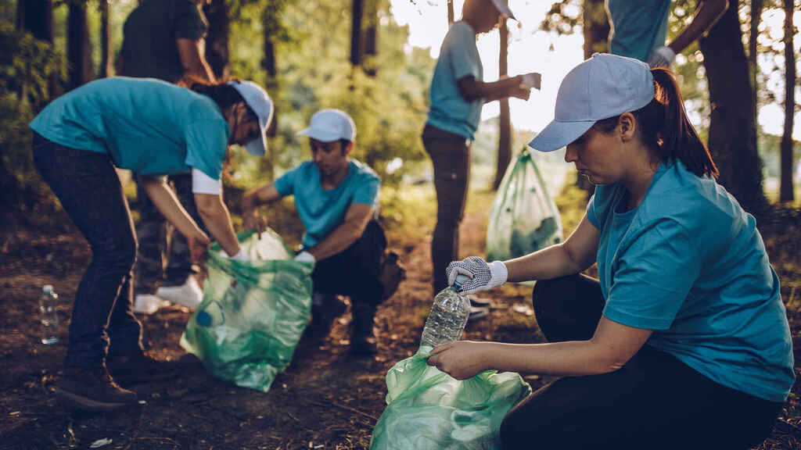
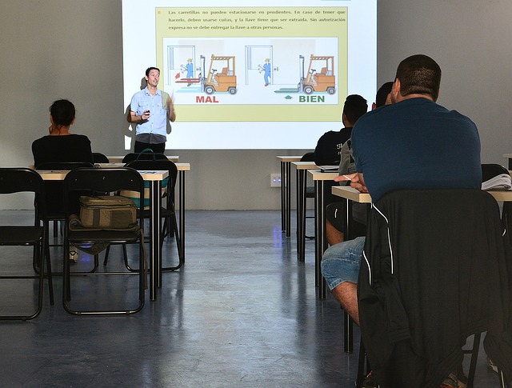
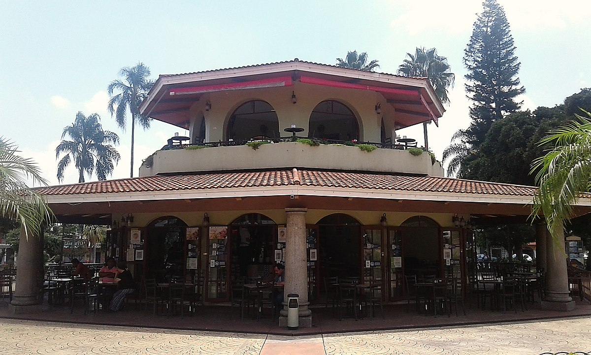

El Acuario Nacional de la República Dominicana es uno de los Acuarios más completos de toda la región del Caribe y es un lugar ampliamente concurrido, tanto por dominicanos como por turistas de diversas partes del mundo.
Estos son algunos de los servicios que ofrecemos
Servicio de voluntariado

Este es un servicio para las personas que estén interesados en colaborar y aprender más de la fauna marina, trabajando de manera voluntaria en las instalaciones de la institución.
Servicio de capacitacion

En este servicio se realizan actividades donde los participantes adquieren y/o amplían información sobre la institución, la biodiversidad costera marina, dulceacuícola y la importancia de su conservación y protección.
Servicio de alquiler de areas

Con este servicio las personas pueden aprovechar un espacios de alquiler dentro de las instalaciones de la institución para la celebración de cumpleaños, bodas, graduaciones, convenciones, campamentos o cualquier otro evento apto para todas las edades.